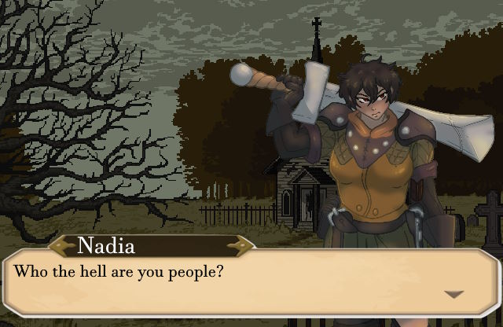
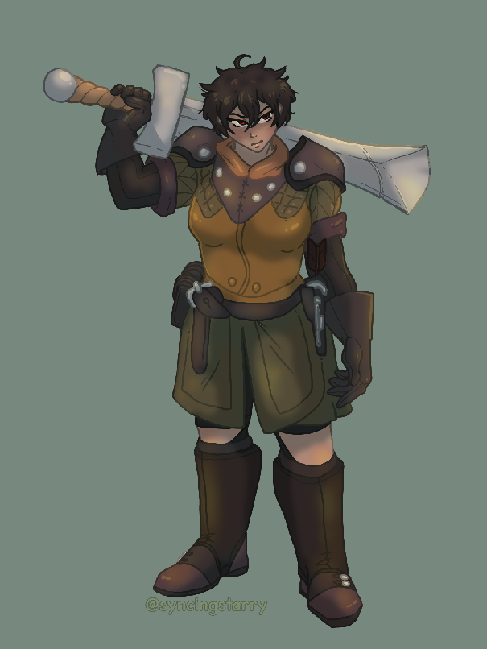
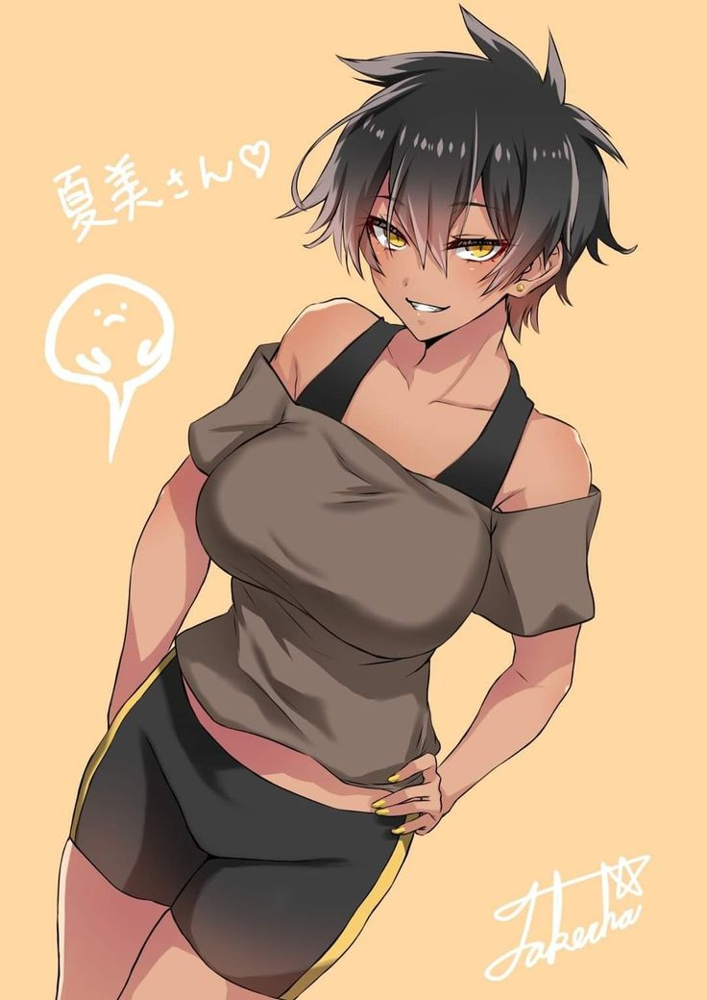

This guide shows you how to romance Nadia. Very little has been found in progressing her romance.
In order to start the romance, at any point in ACT-1 You must travel to the Abadonded Village. This can usually be done with the Forlorn Investagetion quest. Upon reaching the village you'll be able to find and meet Nadia. Pick dialouge carefully, you'll want to avoid the combat encounter with her. You can't die during it, nor can Nadia, however you will have a harder time getting to a Neutral relationship.
Similar to Rion, certain party members work better for this romance. Trenil will not be able to Romance Nadia in ACT-1 Unless Namdu has died, and his faith in the goddess is broken.
Silva, cannont romance any NPC.
Talesin cannot romance Nadia due to the "Finding my Name" Internal quest directly locking it off. This leaves Namdu as a good party member to carry out this romance.
If you are playing non-5e nameless (not patched) then Nadia can be romanced by any party member besides Silva. This does not make it easier however, this is still the hardest romance in the game. 
In order to progess the Nadia romance, having your desired party member see her alone, after the rest of the party is resting unlocks new scenes. These scenes are often deep conversations with tricky dialouge. this i GOD I LOVE NADIANDIANDINA I LOVE NADINADI

OHUGHGHGHGHG I LOVE NADIA
I NEED NAIDNAIDNSAFOKNGSRGNROKGNDOGUNROGJUWUJNOUWNOGINROGIOIGNWOIGOEIJEOITJWOITJEOITJEWOITJEOITJWEOITJEOJTOWEITJOWEITTJJJJJJJJJJJJJJJJJJJJJJJJJJOSIEJOIFOISMEFOIENGOINEFOIRNGIOUNINEOGNWEOGNEOIGNOWEIGNOWEIGNOIWNGOINOIWNOINWROHNRIOUNWOUGHRUGJYEYGUEF74YHR2GHU3T8U38RJ4URH84JHG7U2HWUHGUIWHBG83EUGH4R8HJGF83
